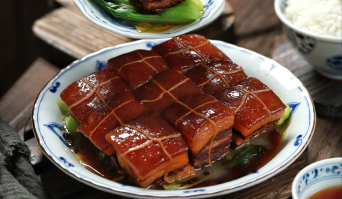

Enjoy Traditional Chinese Food

Snacks -- Song Guozi
In the Song Dynasty, there was a great emphasis on the art of tea, which led to more innovations in tea snacks. Among the most famous were the diverse varieties of "hua su." Hua su came in various types, made from flour, sheep's milk, and cow's milk. They featured a crispy outer layer and were filled with red bean paste, flower paste, etc.
Drinks -- Yang meiyin
At that time, beverage culture thrived. “Dian tea” which was similar to creating latte art. It involved using tea froth to create painting in the tea. People organized "Dian tea" competitions -- "Dou Cha." There were a variety of fruit and herbal beverages. Among the most popular during the summer were chilled fruit drinks, such as Yang Mei Yin.

Foods -- Dong porou
It is named after Su Dongpo, a renowned Song Dynasty poet and gastronome. Dongpo Rou is made from succulent cuts of pork belly, which are braised to perfection in a mixture of soy sauce, wine, and a blend of aromatic spices. The result is tender, melt-in-your-mouth pork with a luscious, sweet, and savory taste.